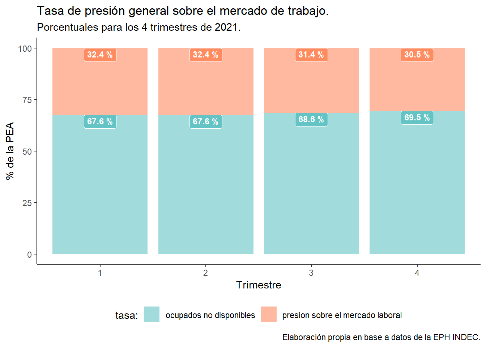

Ver código
#En este caso declaramos un bloque de {python}
#instalamos la libreria de python pyeph
#!pip install pyeph
#la instalacion esta grisada porque en mi caso la libreria ya está descargadaPedro Damian Orden
July 7, 2022
En este documento electrónico preocuraré dar cuenta de una experiencia de integración de lenguajes de programación aplicados al procesamiento de la Encuesta Permanente de Hogares (EPH de INDEC), posible gracias Quarto, un sistema de publicación científica y técnica basado en Pandoc1 que funciona de manera amigable con Rstudio2.
En términos prácticos, Quarto nos va a permitir, además de publicar el contenido que estamos leyendo, integrar y ejecutar varios lenguajes de programación (Python, R, SQL, Bash, entre otros) en un mismo script3, sin tener que incurrir en mayores gestiones ni detalles. A los fines expositivos, uilizaremos esta potente prestación de manera aplicada para, por medio de Python y R, procesar la EPH y graficar la presión sobre el mercado de trabajo durante los cuatro trimestres de 2021, para el total de los 31 aglomerados donde reside la población urbana argentina4.
Al concluir el documento se presenta el video formativo que recupera la experiencia en vivo citada en el marco de un taller abierto.
Al relevar de manera periódica la realidad socioeconómica argentina, la EPH es un gran insumo para conocer los principales indicadores5 sobre el mercado de trabajo y analizar su evolución en el tiempo.
Para dar con un proceso significativo de la dinámica del mercado laboral, nos enfocaremos en este caso en aquellos grupos de personas que no tienen empleo, están disconformes con el que tienen, o bien desean trabajar más horas, lo que operativamente son reflejados por los “indicadores de presión”6.
De esta forma, re-construiremos con datos de la EPH la variable de presión general sobre el mercado de trabajo, para visualisar en nuestro documento cómo un segmento de la PEA puja por mayor participación en el mercado laboral, ya sea demandando trabajar más horas o bien buscando un nuevo empleo7.
Este caso será una buena y sucinta oportunidad para conocer cómo funciona Quarto y estimular la posibilidad de incorporar e integrar lenguajes para el análisis de datos en las ciencias sociales .
Tomaremos como referencia comparativa con nuestro código los datos que provee el informe técnico / Vol. 6, n° 54: Mercado de trabajo. Tasas eindicadores socioeconómicos (EPH) 8.
El trabajo inicial de ETL lo llevaremos adelante en Python9 dado que nos va a resultar más rápido que con R.
Para la recopilación de microdatos utilizaremos la librería pyeph de reciente lanzamiento y que sus creadores/as presentan de la siguiente forma:
“La librería Pyeph tiene como objetivo facilitar el procesamiento en Python de la Encuesta Permanente de Hogares. Está pensada como un espacio donde se nuclean y centralizan los cálculos vinculados a las mismas para posteriormente ser utilizadas en investigaciones, artículos, publicaciones, etc. Es una librería que hace principal hincapié en la transparencia metodológica utilizando licencias de código abierto y que promueve la colaboración de las comunidades de cientístas de datos, sociales, investigadorxs, desarrolladorxs, periodistas y demás curiosxs”.
Vamos entonces a instalar la librería y nos descargaremos el set completo de datos de la encuesta para 2021, no sin antes saber algo importante en Quarto; para construir un bloque de código que ejecute el lenguaje que nos interesa utilizar, primero hay que declararlo.
Llamamos a pyeph y descargamos los datos.
Seguidamente importaremos pandas y formatearemos los datos necesarios para nuestro análisis.
# !pip install pandas
import pandas as pd
# consturimos nuestro dataframefinal
datosehp = pd.concat([eph1, eph2, eph3, eph4, eph5])
# Nos quedamos con las variables que nos interesan, son 5.
datosehp = datosehp[["TRIMESTRE", "PONDERA", "ESTADO", "PP03J", "PP03H"]]
#guardamos los datos a un csv
#datosehp.to_csv('eph2021.csv')Una vez que llegamos a este punto, vamos a abrir un bloque de código en R para dar forma acabada a nuestro proyecto. Para ello descargamos el archivo csv con los datos que construimos y guardamos más arriba.
Llamamos a la libería tidyverse para darle la forma final a nuestro dataframe.
Agruparemos los datos por cuatrimestre y les aplicaremos una serie de funciones para identificar ocupados, desocupados, PEA, ocupados demandantes y disponibles. De esta forma podremos también construir las tasas de desocupación abierta, ocupados demandantes, ocupados no demandantes disponibles, ocupados no disponibles y el porcentual resultante de presión sobre el mercado de trabajo.
presion_ar <- eph2021 %>%
group_by(TRIMESTRE) %>%
summarise(ocupados = sum(PONDERA[ESTADO == 1]),
desocupados = sum(PONDERA[ESTADO == 2]),
PEA = ocupados + desocupados,
ocupados_demand = sum(PONDERA[ESTADO == 1 & PP03J ==1]),
ocupados_disp = sum(PONDERA[ESTADO == 1 & PP03J ==2 & PP03H %in% c(1,2,9)]),
`desocupacion abierta` = desocupados/PEA*100,
`ocupados demandantes` = ocupados_demand/PEA*100,
`ocup. no demandantes disponibles` = ocupados_disp/PEA*100,
`ocupados no disponibles` = 100-c(`desocupacion abierta`+`ocupados demandantes`+`ocup. no demandantes disponibles`),
`presion sobre el mercado laboral` = `desocupacion abierta`+`ocupados demandantes`+`ocup. no demandantes disponibles`)%>%
ungroup()%>%
mutate_if(is.numeric, round, digits=2)%>%
mutate(
TRIMESTRE=as.factor(TRIMESTRE))%>%
select(TRIMESTRE,
'desocupacion abierta',
'ocupados demandantes',
'ocup. no demandantes disponibles',
'ocupados no disponibles',
'presion sobre el mercado laboral')Creemos y visualicemos una tabla con los resultados en gt().
| Resumen de tasas seleccionadas de de Mercado de Trabajo | ||||
Datos porcentuales para los últimos 5 trimestres 2021/2022. |
||||
| Tasas | 1er trimestre | 2do trimestre | 3er trimestre | 4to trimestre |
|---|---|---|---|---|
| desocupacion abierta | 8.55 | 9.60 | 8.24 | 6.97 |
| ocupados demandantes | 16.02 | 16.97 | 16.47 | 17.38 |
| ocup. no demandantes disponibles | 5.89 | 5.84 | 6.67 | 6.13 |
| ocupados no disponibles | 69.53 | 67.59 | 68.62 | 69.53 |
| presion sobre el mercado laboral | 30.47 | 32.41 | 31.38 | 30.47 |
| Fuente: elaboracion propia en base a datos de la EPH (INDEC). | ||||
Grafiquemos los datos con ggplot2. Primero el desagregado problacional de la PEA que presiona sobre el mercado de trabajo.
#install.packages("glue")
library(glue) #glue es una libreria util para pegar texto
presion_ar2 <- presion_ar %>%
gather('Indicador', 'valor', c(2:6)) %>%
arrange(desc(valor))%>%
unique()%>%
ungroup()
total<-presion_ar2%>%
filter(Indicador=="presion sobre el mercado laboral")
p1<-presion_ar2 %>%
filter(!(Indicador %in% c("ocupados no disponibles", "presion sobre el mercado laboral"))) %>%
ggplot() +
aes(x = TRIMESTRE, y = valor, fill = Indicador) +
geom_col(alpha=0.7) +
scale_fill_manual(values = c(`desocupacion abierta` = "#F0AF5C",
`ocup. no demandantes disponibles`='#5C9DF0',
`ocupados demandantes` = "#1A69D2"))+
geom_label(aes(label = glue("{round(valor,digits=1)} %"), y=valor),
size = 3.1, hjust = 0.5, vjust = 1,
fontface = "bold", colour="white",
position = "stack", show.legend = FALSE)+
geom_text(data = total,
aes(x = TRIMESTRE,
y = valor,
label = paste0("Presión total: \n", valor, " %")),
colour="#1F4B72",
size = 3,
fontface = "bold",
hjust = 0.5,
vjust=-0.1,
inherit.aes = FALSE,
show.legend = FALSE) +
labs(x = "Trimestre",
y = "% de la PEA",
title = " Grupos de población económicamente activa
según tipo de presión sobre el mercado de trabajo",
subtitle = "Porcentuales para los 4 trimestres de 2021.",
caption = "Elaboración propia en base a datos de la EPH INDEC.",
fill = "tasa:") +
coord_cartesian(ylim = c(0, 50))+
theme_classic() +
theme(legend.position = "bottom")
p1Finalmente, veamos la película completa, armando un panorama general de cómo es la distribución entre la tasa de ocupados no disponibles y la presión sobre el mercado de trabajo en los 4 trimestres de 2021 para el total de los 31 aglomerados que componen la EPH.
p2 <- presion_ar2 %>%
filter((Indicador %in% c("ocupados no disponibles",
"presion sobre el mercado laboral"))) %>%
ggplot() +
aes(x = TRIMESTRE, y = valor, fill = Indicador) +
geom_col(position = position_stack(reverse = TRUE), alpha=0.6) +
scale_fill_manual(values = c(`ocupados no disponibles` = "#63C3C5",
`presion sobre el mercado laboral` = "#FF8B60"))+
geom_label(aes(label = glue("{round(valor,digits=1)} %"), y=valor),
size = 3.1, hjust = 0.5, vjust = 1,
fontface = "bold", colour="white",
position = position_stack(reverse = TRUE),
show.legend = FALSE)+
labs(x = "Trimestre",
y = "% de la PEA",
title = "Tasa de presión general sobre el mercado de trabajo.",
subtitle = "Porcentuales para los 4 trimestres de 2021.",
caption = "Elaboración propia en base a datos de la EPH INDEC.",
fill = "tasa:") +
theme_classic() +
theme(legend.position = "bottom")
p2
Con respecto a los datos y objetos gráficos que creamos se prefigura que la presión sobre el mercado de trabajo tendió a reducirse durante el año 2021 lo cual sería a propiori un dato positivo. Esta primera impresión deberá ser analizada en el marco de otros análisis para conocer sus implicancias concretas en la realidad socioeconómica nacional.
Para acceder a los datos del mercado de trabajo en una serie de tiempo más amplia y en formato interactivo puede consultarse el monitor socioeconómico de mi autoría.
En Quarto la mezcla no es sinónimo de amontonamiento. La posibilidad amigable de integrar varios lenguajes de progamación en procesos de analítica y modelado de datos en ciencia sociales escala las opciones para hacer y conocer.
Al respecto se seguirá resaltando que las tecnologías de programación y procesamiento de datos que hoy tenemos a disposición como profesionales10 nos permiten automatizar y/o resolver tareas complejas, reducir tiempos de entrega y costos, hechos que hasta hace poco tiempo resultaban impensables. Es indispensable tomar contacto con la técnica contemporánea, conocer cuales sos sus prestaciones e indagar con criterio profesional el hecho de si pueden o no ayudarnos a resolver problemas de nuestra rutina de trabajo.
Quarto puede ser pensado mas allá de la plataforma de publicación, como un util secuenciador de nuestros flujos de trabajo, para ordenar fragmentos concretos de nuestro código y articular lenguajes de programación distintos sin tener que perder tiempo en configurar mayores cuestiones.
Algo que no es una conclusión pero no he no mencionado anteriormente es que Quarto es muy parecido a Rmarkdown y para quienes vienen usando esta plataforma el pasaje va a ser relativamente sencillo.
De la breve experiencia aquí presentada emerge una gran pregunta que tiene que ver con las (nuevas?) formas en que se construyen ciertos saberes contemporáneos. En el campo de las ciencias sociales y el desarrollo computacional la combinación criteriosa de teorías, métodos y lenguajes de programación se prefiguran como una potente estrategia de trabajo para abordar la compleja gama de realidades epocales en las que discurrimos como profesionales.
El 22-9-2022 este documento fue presentado en una experiencia de taller abierto del Núcleo de Innovación Social. A continuación el video tutorial que permite seguir la experiencia paso a paso.
Para conocer más https://jasoncausey.net/post/quarto_early_impressions/↩︎
En términos más amplios puede pensarse también como un flujo de trabajo en el cual vamos encadenando acciones para llegar a responder un problema, independientemente de los lenguajes, formatos o publicaciones.↩︎
Abarca 31 aglomerados urbanos donde habita, aproximadamente, el 70% d e la población urbana del país. Cubre todas las capitales de provincia y aglomerados urbanos de más de 100 mil habitantes. Más sobre la EPH: https://www.indec.gob.ar/indec/web/Institucional-Indec-BasesDeDatos↩︎
En este apartado INDEC sube los principales materiales relacionados al tema: https://www.indec.gob.ar/indec/web/Nivel4-Tema-4-31-58↩︎
A propósito de la noción de presión sobre el mercado laboral, comúnmente se presupone que la población con una inserción insuficiente en el mercado de trabajo es la de los desocupados, por sus características específicas de no contar con una ocupación y buscarla de manera activa. No obstante, dicho proceso de búsqueda se verifica únicamente dentro de otros grupos poblacionales. Habida cuenta de los elevados niveles de desocupación y su prolongación en el tiempo, que caracterizan la historia reciente argentina, de manera frecuente las personas aceptan trabajos que si bien no se adaptan a sus expectativas de vida, les permiten obtener un ingreso en el mientras tanto y continuar en la búsqueda de un mejor horizonte laboral.↩︎
Para profundizar más en indicadores sobre empleo y su medición se invita a conocer el trabajo de E Actis Di Pasquale de 2005: Condiciones Críticas de Empleo. Una Nueva Perspectiva de la Cuestión Laboral.↩︎
INDEC. Recoge los datos completos de la serie 2021.↩︎
Si esa primera vez que oís hablar de este lenguaje para descargar y configurarlo en tu pc quizás te sirva este video.↩︎
Este articulo piensa en el caso particular de las ciencias humanas, pero esta abierto a cualquier otra identificación homóloga.↩︎
@online{damianorden2022,
author = {Pedro Damian Orden and Pedro Damian Orden},
title = {R y {Python} En {Quarto:} {Explorando} La Presión Sobre El
Mercado de Trabajo Según La {EPH.}},
date = {2022-07-07},
langid = {en}
}